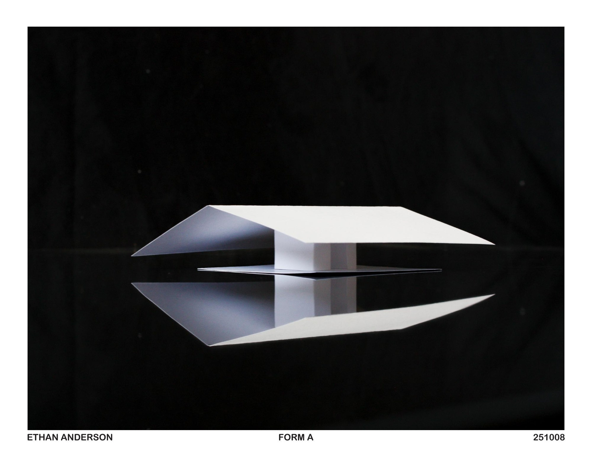
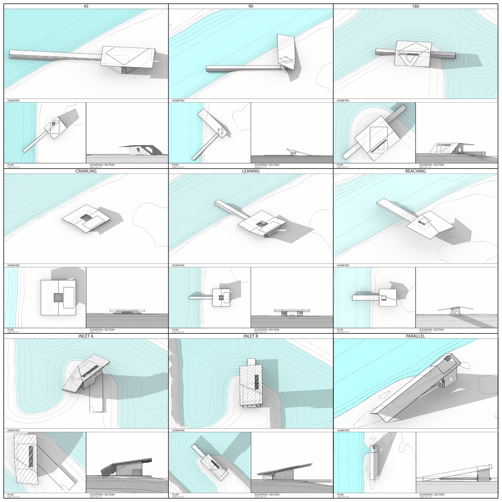

ARCH 273 · University of Illinois Urbana-Champaign · 2025
The Dark Side of Chicago · USS Lead (ARCH 273)
A semester on East Chicago's USS Lead Superfund site: a time-bending atlas, gable prototypes that dunes could grow on, a village modeled on Dutch dikes, and a hundred-year story told by birds and wind.
The story
The Revival Architecture Studio gave each of us one of eight Superfund sites and asked for regenerative interventions. Mine was USS Lead in East Chicago. Lead and arsenic are in the soil there, and the ground needs remediation, so I built the semester around phytoremediation: plants drawing the contamination back out.
M1, The Dark Side of Chicago, is a 3 × 3 ft temporal site atlas. It follows East Chicago from oak savanna to the present and out into possible futures, drawn on the light cone.
M2, the gable prototypes, answered the channel forms that run all through the region. I explored how the land relates to those channels, and whether the gables could take part in the remediation and let the ground go back to the dunes and swales that were native to it.
M3, the EcoLounge Village, is what the gables became when I combined them. It takes its system from the Netherlands' dikes. The buildings' geometry, placement and orientation are set so that dunes grow on them naturally, rebuilding the dune and swale ecology, and the buildings are places where people work to help the dunes grow and the soil recover. The dunes are built from remediated soil taken out of the swales and channels that connect the landscape. There are three building types:
- Guardians are the anchors that dunes build up on.
- Dreamers are smaller utility and storage spaces.
- Sleepers are connective and supportive.
M4 is an architectural graphic novel covering a hundred years of the site. Birds tell it, through their run-ins with the land and with the forces that shape it (the west wind piling sand into dunes and swales). Hazel the Naturalist is based on Hazel M. Johnson, an environmental justice activist from the area.
From M3 on, the work changed because of who I was working with. A partnership with a classmate, and my start with the Radical Accessibility Project, moved my thinking about stakeholders from who a design affects to who takes part in the design itself.
What I did
- M1 · Temporal site atlas, 3 × 3 ft (September–October 2025)
- M2 · Gable prototypes: paper models photographed as Forms A–E (October 8, 2025), a Grasshopper gable prototype, 3D prints and a 36 × 36 in pin-up board
- M3 · EcoLounge Village: a Guardian, Dreamer and Sleeper building system modeled on Dutch dikes, with Rhino and Grasshopper studies of dunes and walkways, working from a map of the dunes and swales before industry
- M4 · Architectural graphic novel, with a cast that includes Zephyrus the West Wind, Ben Bittern, Cary Piper, Annie the Canal Nymph and Hazel the Naturalist
- Made the M4 models and pages readable by touch: model files with braille labels and tactile scale rulers, a braille north arrow, and PIAF swell-paper layers for graphic novel spreads
Process
- I built the atlas on the light cone, the spacetime diagram where past and future cones meet at a single point, the present. A bright point sits at the centre of the sheet. The past runs back along a diagonal timeline, and coloured cones open toward possible futures.
- The atlas also borrows features of the lemniscate, a shape I keep coming back to across my work
- The diagonal band records soil sampling for lead and arsenic across the site's zones; atomic diagrams of lead (Pb) and arsenic (As) sit in the corner
- M1 sketch sequence from August 28 to September 7, 2025, then Part B (September 8–14) and the midterm print (October 1)
- The gables and the channels: the region's channels set the question for M2 (how does this land meet water that people cut into it?), and the leaning gable was the answer I carried forward
- Wind as a character: in M4 the west wind builds the dunes and swales, and a bird asks whether it can land on the sand
- Tactile tests: PIAF test prints in M3, then paired "PIAF layer" and "no PIAF" versions of M4 spreads, and layered laser-cut and 3D-printed versions of the Sleeper, Guardian and Dreamer types
Outcome
- A 358-page semester book and M1–M4 compendiums (December 13, 2025)
- 3 × 3 ft atlas, printed for the October 1 midterm
- Tactile model and page files for M4 (braille labels, tactile rulers, PIAF layers)
Reflection
TODO(ethan): only if you want one, in your own words.
Drawings

